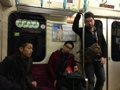
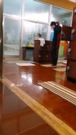

PARTICIPANTS:
DB ID: 0
Current name: You
Address book name: You
User name:
Phone Number:
Key:
DB ID: 266
Current name:
Address book name:
User name: AYABE AKIKO
Phone Number:
Key:
DB ID: 251
Current name: Naruto
Address book name: None
User name: Naruto
Phone Number:
Key:
DB ID: 48
Current name:
Address book name:
User name: MAYUMI
Phone Number:
Key:
DB ID: 25
Current name: Hirokazu Yano
Address book name: None
User name: Hirokazu Yano
Phone Number:
Key:
DB ID: 61
Current name: clo
Address book name: Calvin google
User name: clo
Phone Number: 08092052032
Key: 080-920-52032
DB ID: 264
Current name: リキ Chikara
Address book name: None
User name: 晴山 力
Phone Number:
Key:
DB ID: 16
Current name: AMI
Address book name: Ami
User name: AMI
Phone Number: 09066582135
Key: 090 6658 2135
DB ID: 70
Current name:
Address book name:
User name: H.Ave
Phone Number:
Key:
Messages:
2013/03/25 17:30:28, "0:You":
Wai wai!
2013/03/25 17:30:47, "0:You":
Party party!
2013/03/25 17:31:21, "0:You":
AYABE AKIKO cancelled かおり's invitation to the group.
2013/03/25 18:15:34, "0:You":
http://kasikiri-party.com
2013/03/25 18:16:58, "0:You":
We get a room and do some games.
2013/03/25 18:17:33, "0:You":
...do you think that people wanna play games or rather drink
2013/03/25 18:17:34, "0:You":
?
2013/03/25 18:17:55, "266:":
I think "both"!
2013/03/25 18:19:48, "0:You":
I can prepare some pictures to project on the wall.
Then we do the typical games... Movies, search Wally, some drinking game...
2013/03/25 18:20:04, "266:":
Game sounds fun..so if there are vacancy, let's think 'bout the game. And, if someone have projecter, can't we ...yup,
2013/03/25 18:20:32, "266:":
I think the same thing as you.
2013/03/25 18:21:19, "0:You":
They have really cheap party spaces in Shibuya
2013/03/25 18:22:25, "266:":
I c.
2013/03/25 18:24:29, "0:You":
Can I call?
2013/03/25 18:24:43, "266:":
okay.
2013/03/25 18:24:57, "0:You":
Oh! Before calling
2013/03/25 18:25:17, "0:You":
We need to choose the place
2013/03/25 18:25:32, "0:You":
Shibuya is best, right?
2013/03/25 18:25:54, "266:":
yup. if u recommend, yes!
2013/03/25 18:33:42, "0:You":
I cannot do this
2013/03/25 18:34:01, "0:You":
They are giving me the wrong prices
2013/03/25 18:34:27, "266:":
woo! how about Cal's condo?
2013/03/25 18:34:31, "0:You":
They try to make me take 飲み放題プラン
2013/03/25 18:34:49, "266:":
uh ha!
2013/03/25 18:35:42, "0:You":
Don't you mind to try...
The best I got was 20~ people. 4500¥
2013/03/25 18:36:39, "0:You":
Price per person, includes nomihoudai & tabehoudai
2013/03/25 18:37:04, "0:You":
I personally find it expensive
2013/03/25 18:37:31, "266:":
uh ... yea a little bit.
2013/03/25 18:38:15, "0:You":
Can you call?
2013/03/25 18:38:32, "266:":
ok
2013/03/25 18:43:00, "0:You":
Naruto joined the group.
2013/03/25 18:48:46, "266:":
2013/03/25 18:50:10, "266:":
2013/03/25 18:51:05, "0:You":
Sorry I cannot move
2013/03/25 18:51:14, "0:You":
Bosses are near
2013/03/25 18:51:34, "266:":
okay! let me know whenever u can talk!
2013/03/25 18:51:47, "0:You":
Yep
2013/03/25 19:13:53, "0:You":
MAYUMI 中野駅 joined the group.
2013/03/25 19:48:26, "266:":
2013/03/25 20:34:04, "0:You":
名塚亜美 joined the group.
2013/03/25 20:46:56, "251:Naruto":
皆で何か買うかねー
2013/03/25 20:54:01, "251:Naruto":
ちなみにfbでイベント作った？もし作ってたらやのに伝えておくよー
2013/03/25 20:58:20, "266:":
まだつくってなーぃw
2013/03/25 20:58:33, "266:":
まだなんにもきまってなーぃw
2013/03/25 20:58:48, "0:You":
まだ作ってない
時間も場所も決まってないから
2013/03/25 20:59:05, "251:Naruto":
オッケー！
2013/03/25 20:59:13, "0:You":
なるとさん家大きい？
2013/03/25 20:59:33, "251:Naruto":
狭いわ！w
2013/03/25 21:00:08, "266:":
10人くらい入れる？w
2013/03/25 21:00:38, "266:":
THOMに部屋(LAV2階)使えるか聞いてみるね。
2013/03/25 21:01:10, "251:Naruto":
まぁ 満員電車気分でなら入れる！
2013/03/25 21:01:24, "251:Naruto":
はーい
2013/03/25 21:02:07, "251:Naruto":
カルビんとやのもここに呼んでおく？
2013/03/25 21:02:23, "266:":
うん！ありがとう！
2013/03/25 21:04:52, "0:You":
Naruto invited Hirokazu Yano, Calvin google to the group.
2013/03/25 21:36:44, "0:You":
Hirokazu Yano joined the group.
2013/03/25 21:38:06, "251:Naruto":
ちなみにバスって駄目だった？アップスターって所かな
2013/03/25 21:38:59, "266:":
2013/03/25 21:39:22, "266:":
あーTONI曰くだめで、
2013/03/25 21:39:43, "266:":
私はクルーズ関係を当たったが、だめだったーー
2013/03/25 21:40:21, "251:Naruto":
なるほどー お疲れ様！
2013/03/25 21:41:08, "266:":
ぃえぃえ。
2013/03/25 21:42:45, "48:":
色々ありがとー
2013/03/25 22:28:33, "0:You":
ゆうかちんを連れて来ていい？
2013/03/25 22:35:18, "251:Naruto":
welcomeだとおもうよー？
賑やかな方が阿部くん好きそうだし！
2013/03/25 22:35:52, "266:":
うん、いいとおもうよー。私も関西からの友人が来る、かも！丁度重なってしまって。
2013/03/25 22:36:17, "251:Naruto":
マーク？
2013/03/25 22:36:33, "266:":
いや、違いますw美魔女！w
2013/03/25 22:36:51, "0:You":
いいね！
2013/03/25 22:36:59, "251:Naruto":
w
2013/03/25 22:37:03, "266:":
マークは、まだ友人じゃないよwなんつってww
2013/03/25 22:37:36, "251:Naruto":
えーw 聞いたらマーク泣くなw
2013/03/25 22:37:57, "0:You":
You sent a photo.

2013/03/25 22:38:15, "0:You":
うちの子可愛いだろ？！
2013/03/25 22:38:57, "251:Naruto":
トニの子供おっきいなぁ
2013/03/25 22:39:11, "266:":
ww
2013/03/25 22:39:16, "266:":
かわいい！
2013/03/25 22:41:49, "25:Hirokazu Yano":
おーかわいい
2013/03/25 22:42:45, "0:You":
誕生日ケーキを2つ買おう！
1つ目はひろみの顔に当たってよ
2013/03/25 22:43:25, "0:You":
安いクリームパイとタオル持ってこよう
2013/03/25 22:43:50, "251:Naruto":
投げるのかw
2013/03/25 22:44:18, "25:Hirokazu Yano":
大きいタオルねw
2013/03/25 22:44:39, "266:":
楽しそう！
2013/03/25 22:44:52, "0:You":
投げる前に本人の許可をとれば大丈夫
2013/03/25 22:45:19, "266:":
そうそう簡単に許可おりないんじゃない？w
2013/03/25 22:45:22, "266:":
カラオケルームでいんじゃない？もはやw
2013/03/25 22:45:55, "251:Naruto":
あははホントだ
2013/03/25 22:46:09, "0:You":
お!あきちゃんはいい提案をしたかも！！
2013/03/25 22:46:11, "25:Hirokazu Yano":
店に怒られないようにパイやらないとね
2013/03/25 22:46:15, "25:Hirokazu Yano":
w
2013/03/25 22:46:41, "266:":
もしくはなるてぃのお家ねw
2013/03/25 22:47:01, "266:":
また連絡しまーす！
2013/03/25 22:47:06, "251:Naruto":
まじかw
2013/03/25 22:47:12, "25:Hirokazu Yano":
ナルティー家いいなーw
2013/03/25 22:47:34, "251:Naruto":
ビニールで囲むか、、
2013/03/25 22:47:54, "25:Hirokazu Yano":
ナルティーを？w
2013/03/25 22:48:34, "251:Naruto":
どんだけ潔癖なんだよw
2013/03/25 22:49:56, "25:Hirokazu Yano":
w
2013/03/26 00:31:02, "0:You":
Calvin google joined the group.
2013/03/26 11:24:41, "266:":
2013/03/26 11:26:15, "266:":
2013/03/26 11:26:29, "266:":
パイ投げは、二次会でw
2013/03/26 11:27:26, "0:You":
Oh! 2次回もあるんだ！
2013/03/26 11:27:31, "0:You":
いいね！
2013/03/26 11:28:43, "251:Naruto":
いいね！
2013/03/26 11:28:54, "0:You":
Tomはダメだったら渋谷のパーティルームの会社にまた電話をしてみるよ
2013/03/26 11:31:44, "266:":
パイ投げの話はダメだったw
2013/03/26 11:32:50, "0:You":
じゃ！No pieで
2013/03/26 11:32:58, "266:":
w
2013/03/26 11:33:30, "266:":
No pieで使って良いかまたきいてみる。因みにみなさん…
2013/03/26 11:33:55, "266:":
クルーズ的な非日常を日中から楽しむのと
2013/03/26 11:34:17, "266:":
THOMの部屋で飲むのとw
2013/03/26 11:34:25, "266:":
どちらが良くて？
2013/03/26 11:37:23, "266:":
先ほどのカフェは一応、10名で予約しましたー。
2013/03/26 11:37:55, "251:Naruto":
パイ投げ聞いたんだ？w
thomの部屋ってどんな感じなのか分からないけど日中クルーズのほうがいつもと違って楽しそうだね
2013/03/26 11:41:05, "0:You":
予約済？！
じゃ！決まりだね。
2013/03/26 11:42:21, "266:":
だよね。一応カフェはランチタイムに予約して、詳細は木曜日まで変更•キャンセル可能。パイ投げやりたかったら、浜離宮にカラオケありそうやから、そこでどうかなww
2013/03/26 11:42:50, "266:":
昨日のT.Y HARPER BREWARYも仮予約してるよー
2013/03/26 11:43:06, "266:":
どちらもランチタイム。
2013/03/26 11:44:31, "266:":
そうだ。時間決めてなかったね。このクルーズの場合なら、浜離宮☞浅草☞カフェ、もしくはカフェ☞クルーズ☞浜離宮☞カラオケパイ投げw
2013/03/26 11:46:52, "251:Naruto":
ty harperも良い場所だよねー 時間は合わせるよ 阿部くんの都合にー
2013/03/26 11:53:46, "266:":
そうだねー。
2013/03/26 11:55:22, "266:":
なんかディナータイムだと、通常1,3F営業とは違うらしく、5F1フロアを一般営業にまわすらしいので、そちらの方がお得感あるかなとw
2013/03/26 11:57:32, "266:":
なので一旦そちらで予約取り直したので、水曜日くらい迄に他がなければ、多数決でどちらかに決めちゃいましょーw
2013/03/26 11:57:46, "251:Naruto":
おっけー
2013/03/26 11:57:54, "266:":
パイ投げは、カラオケか、なるとくん家でw
2013/03/26 12:02:47, "251:Naruto":
是非、カラオケで!!!
2013/03/26 12:13:34, "266:":
水上バスといえば！と思い、さっきのカフェは蔵前やから、オーナーが友達のお店にも聞いてます。http://s.tabelog.com/tokyo/A1313/A131306/13002924/?lid=header_restaurant_detail_ctc_redirect
これで思いつく事はやり尽くしたのでw、一旦お店＆イベントの件は水曜日までリリースしまーす！w
2013/03/26 13:32:12, "48:":
あきちゃん、サンキュー❗
2013/03/26 13:32:47, "48:":
楽しそーだねー
2013/03/26 14:09:28, "266:":
とりあえず、http://s.tabelog.com/tokyo/A1313/A131306/13002924/?lid=header_restaurant_detail_ctc_redirectは、何時でも予約可能らしいよー。お天気が良かったらテラスも有るって。
2013/03/26 14:10:14, "266:":
もうこれ以上広げたら収集つかない気がしてきたょw
2013/03/26 19:03:48, "266:":
なるてぃ
2013/03/26 19:04:02, "266:":
いえいっていい？当日w
2013/03/26 19:08:06, "266:":
お店、高くつくねって話もw
2013/03/26 19:30:34, "0:You":
AYABE AKIKO invited リキ Chikara to the group.
2013/03/26 20:08:35, "61:clo":
僕は日本にすでに帰りたいです。
2013/03/26 21:29:48, "266:":
おうちかしてーw
2013/03/26 21:38:02, "251:Naruto":
打合せから帰ってきたら話がすごいことに！(笑)
2013/03/26 21:38:12, "0:You":
リキ Chikara joined the group.
2013/03/26 21:38:21, "266:":
なるてぃーへーるぷ！涙
2013/03/26 21:38:32, "266:":
もーいっかな、TYでw
2013/03/26 21:38:43, "266:":
CAKE持ち込み代かかるけど
2013/03/26 21:38:50, "251:Naruto":
うん？
2013/03/26 21:39:23, "266:":
ひとり三百円とられるのーケーキ持ち込んだら
2013/03/26 21:39:23, "0:You":
うちが大井町だから無理ですね〜
2013/03/26 21:39:38, "266:":
なにがむりー？むしろよくない？w
2013/03/26 21:39:52, "251:Naruto":
うちは狭いから無理だな、、
2013/03/26 21:40:11, "266:":
TYなんでだめ？TONI
2013/03/26 21:41:05, "251:Naruto":
tyでなくて家の事だとおもうよ
2013/03/26 21:41:59, "251:Naruto":
トニが無理だといったのは
2013/03/26 21:45:37, "251:Naruto":
#1船乗ってからカフェ
#2船乗ってからカラオケ
#3TYハーパー
#4誰かの家
ってプランだよね？
2013/03/26 21:47:08, "266:":
そーw
2013/03/26 21:47:14, "266:":
今女性陣でも話ししてるー
2013/03/26 21:47:36, "251:Naruto":
オッケー
2013/03/26 21:48:36, "266:":
なるてぃ一番人気だからうちらのなかでw
2013/03/26 21:48:50, "266:":
なるてぃについて、熱くかたってるからww
2013/03/26 21:49:47, "251:Naruto":
いやいや阿部くんの誕生日の話を進めましょう！w
2013/03/26 21:50:19, "266:":
あっ…ww
2013/03/26 21:55:24, "0:You":
OK
#4誰かの家
はトニーの家でいいよ
2013/03/26 21:55:57, "251:Naruto":
！！！
2013/03/26 21:56:01, "48:":
おっけー
2013/03/26 21:56:13, "48:":
トニーの家で
2013/03/26 21:56:17, "48:":
昼スタート
2013/03/26 21:58:04, "48:":
それか
#3TYハーパー行ってから
トニーの家とか。
2013/03/26 21:58:31, "251:Naruto":
ほうほう、、パイ投げかぁ、、
2013/03/26 22:01:19, "251:Naruto":
晴れてたらTYハーパーいってからでも良いね！
2013/03/26 22:02:45, "0:You":
決まった！
2013/03/26 22:04:07, "266:":
そーテラスは満杯やったから、あきしだい…
2013/03/26 22:04:17, "251:Naruto":
オッケー！
2013/03/26 22:04:28, "48:":
11:40 品川集合
2013/03/26 22:04:39, "266:":
ケーキはTONIの家でたべよー
2013/03/26 22:05:30, "266:":
プレゼントは女子プラスゆうしで！
2013/03/26 22:06:31, "251:Naruto":
はーい
2013/03/26 22:07:05, "266:":
なるてぃ萌！ちゅぅw
2013/03/26 22:09:19, "0:You":
You sent a photo.
2013/03/26 22:12:21, "251:Naruto":
えぇ？w
2013/03/26 22:13:19, "251:Naruto":
おー さくらキレー どこ？
2013/03/26 22:13:20, "266:":
もてもて！ww
2013/03/26 22:13:31, "266:":
あれ、きのーのこ？
2013/03/26 22:21:16, "0:You":
Roppongi terizaka
2013/03/26 22:22:06, "264:リキ Chikara":
あれー、また今日もでーと？
2013/03/26 22:22:27, "264:リキ Chikara":
うらやましい
2013/03/26 22:23:34, "251:Naruto":
ちから、、w
2013/03/26 22:24:15, "48:":
はいはいw
話戻そー！！
2013/03/26 22:24:42, "251:Naruto":
w
2013/03/26 22:25:37, "48:":
時間変更！
12時50分に品川駅集合！
2013/03/26 22:26:48, "264:リキ Chikara":
え？
2013/03/26 22:26:54, "264:リキ Chikara":
品川ですか？
2013/03/26 22:26:58, "16:AMI":
4500円のバースデープレートを予約しましたー！
2013/03/26 22:26:59, "48:":
そう
2013/03/26 22:27:03, "264:リキ Chikara":
大井町じゃなくて？
2013/03/26 22:27:04, "16:AMI":
花火つきー！
2013/03/26 22:27:52, "266:":
JR品川駅港南口から徒歩約15分
2013/03/26 22:27:59, "266:":
タクロ！
2013/03/26 22:28:05, "251:Naruto":
おー！
2013/03/26 22:28:43, "266:":
TONI,MOVIEやらないの？
2013/03/26 22:29:05, "0:You":
OK
2013/03/26 22:30:20, "251:Naruto":
花火つきバースデープレートはかわいいね
2013/03/26 22:32:01, "251:Naruto":
Movie?撮るの？
2013/03/26 22:32:02, "266:":
しんじゅくほうめんのひとは、天王洲アイル直通あるょ
2013/03/26 22:33:26, "266:":
え？TONIなに？wどっち？w
2013/03/26 22:37:28, "266:":
なんかToniがLINEで2,3分のMOVIEを撮って、プロジェクターでまわしたいっていってたんだょなるてぃ。
2013/03/26 22:38:52, "251:Naruto":
なるほど
2013/03/26 22:39:36, "0:You":
そうそう！やろう！
TVで流すよ
2013/03/26 22:39:50, "0:You":
せっかくTVあるから
2013/03/26 22:40:13, "266:":
あと、FBでサプレやろ！
2013/03/26 22:40:18, "251:Naruto":
いいね!
2013/03/26 22:50:14, "48:":
なるてぃー！
この前のあべ会で、いっちーさんもお昼だけなら来れるって言ってなかった？？
聞いてみてー！
2013/03/26 22:51:00, "251:Naruto":
わかったー
2013/03/26 22:52:02, "48:":
さんきゅ
2013/03/26 22:54:02, "48:":
今、あみちゃんがサプレやってくれてるよー
2013/03/27 09:36:02, "0:You":
FBのイベントを作るよ！
1次会
ロングボード・カフェ
（LONGBOARD CAFE）品川12:50 (????¥)
2次会
トニー家でBDケーキとシャンパーニュとBDムービー(500¥)
あきちゃん, Can I proceed?
2013/03/27 09:37:53, "266:":
Sure! but the place is here!☞http://www.tyharborbrewing.co.jp/jp/ty-harbor/menu/lunch/
2013/03/27 09:38:06, "266:":
わかりにくくてごめんねTONI
2013/03/27 09:41:28, "0:You":
OK, got it!
Do you know already the price and the length of the reservation. I mean, from what time to what time?
2013/03/27 09:54:02, "266:":
TIME: From 1 o'clock and no time restriction.
Price: By order
(except Hiromi, we should share the devided price of derert plate for cerebration, about 700-800yen.)
2013/03/27 09:57:27, "266:":
I rererved as 8 people.
TONI,TONIの彼女、なるてぃ、ちからくん、やのさん、まゆみちゃん、あみ、あき、たぶんあきの友達、あべちゃん、、、他は大丈夫かな？増えそうなら今日中に！
2013/03/27 10:09:33, "0:You":
1とクニを誘ってみる
2013/03/27 10:09:57, "266:":
そうだったね！了解！
2013/03/27 11:11:41, "266:":
チラと、どこかのタイミングで、父の会社のお花見に顔だししにいかなくちゃだが、1時間位でもどるね。MOVIEはいつまでに渡せば良いかな、TONI?
2013/03/27 11:41:17, "0:You":
MOVIEは金曜日までOK.
準備はすぐ出来ます。
今の皆さん、8人とも！
ひろみへのメッセージを携帯でとってここに載せて、ね？！
2013/03/27 11:43:20, "0:You":
恥ずかしい人はペアーで撮ればよいのよ。
2013/03/27 12:05:12, "266:":
は、は、はーぃ！w
2013/03/27 12:18:54, "25:Hirokazu Yano":
すまん、調整してみるけど、今のところ土曜日は夕方から夜しか空いてない。
2013/03/27 12:28:52, "266:":
そっか。何時から平気ですか？
2013/03/27 12:53:32, "25:Hirokazu Yano":
17時過ぎかなー、ごめん。
2013/03/27 12:53:47, "25:Hirokazu Yano":
てか会は夕方まで？調整できたらしてみます。
2013/03/27 12:57:27, "0:You":
FBイベントを作った。
http://www.facebook.com/events/332997296822539/
ここで写真やムービーを載せられる
2013/03/27 12:57:35, "25:Hirokazu Yano":
二次会は何時から？
2013/03/27 12:57:40, "266:":
お店は、一応1時過ぎからで、時間制限は無いし、TONIのお家にそのあと行くから、ぜひ調整か難しくても、来れる時間帯に来てください！
ロンドンバスの話が出てたから、てっきりDAY TIMEかと-3-3
こちらこそ、すんませーん！
2013/03/27 12:58:01, "266:":
みんなでおいわいしよー！
2013/03/27 12:58:42, "266:":
Tks TONI!
2013/03/27 13:01:57, "25:Hirokazu Yano":
なるほどー！俺は逆にロンドンバスは夕方か夜だと思い込んでた(^-^;
2013/03/27 13:02:33, "25:Hirokazu Yano":
なるべく早く行けるようにするです
2013/03/27 13:03:57, "266:":
そうなの？ww 何かあべくんはどちらでも良かったみたいなんだけど、、、お店のラストオーダーが3時までだから、後ろにずらせないなぁと…すんません！お待ちしてます！！
2013/03/27 13:12:29, "25:Hirokazu Yano":
３時過ぎると、トニー宅だね！
了解です。色々ありがとう！
2013/03/27 13:18:08, "266:":
はーぃ！また土曜日に！
2013/03/27 13:34:18, "16:AMI":
サプレの招待送ったので書き込みよろしくー！
2013/03/27 13:36:07, "266:":
あみありがとー❤
2013/03/27 13:52:01, "16:AMI":
あきちゃんも色々ありがとー
2013/03/27 13:52:50, "16:AMI":
私あべ会の人多々FBで友達じゃないので、ちょっと漏れがあるかも
2013/03/27 14:04:53, "16:AMI":
もし、この人あべ会じゃないとか入ってないって人見つけたら追加、削除お願いします！
2013/03/27 14:07:40, "48:":
あみちゃん、ありがと✨
2013/03/27 14:07:47, "266:":
おっけ！
2013/03/27 14:07:58, "48:":
あきちゃんもトニーもありがとねー✨
2013/03/27 14:12:33, "48:":
MOVIEって、撮ったらラインにアップすればいいのー？
2013/03/27 14:29:35, "266:":
はーぃ！
2013/03/27 14:29:41, "266:":
こちらこそ！
2013/03/27 17:25:56, "16:AMI":
あのー！！
2013/03/27 17:26:58, "16:AMI":
サプレでメッセお願いしたら、みんなから"パーティはやらないの？？"と殺到しておりますw
2013/03/27 17:27:28, "266:":
あららららら
2013/03/27 17:27:45, "266:":
何人くらい？お店さがしなおす？
2013/03/27 17:28:27, "16:AMI":
今のところ二人だけど、誘えばもっと来る気がするw
2013/03/27 17:28:45, "266:":
んーどうすればよいかな
2013/03/27 17:29:05, "266:":
人数確定しないと、予約難しいんだな、この時期…
2013/03/27 17:29:33, "266:":
ちとT.Yで人数をあと数人増やせるかを聞いてみるよ
2013/03/27 17:30:40, "266:":
ちなみにだれー？
2013/03/27 17:31:35, "266:":
TONIの家も行くよね。あまり増やしても…どうなんだろ。
2013/03/27 17:32:57, "266:":
二次会(TONIのおうち)に行ったあと、別に集まれるひとは集まる感じはどうかなー？
2013/03/27 17:34:43, "16:AMI":
確かに…。あべちゃんは一日中大丈夫なのかな？
2013/03/27 17:35:29, "16:AMI":
夜三次階会やってもいーけど、肝心な本人いないとねz
2013/03/27 17:35:52, "251:Naruto":
それが良いかもね。
でも確かにあべちゃんの予定がわからん。
2013/03/27 17:36:39, "251:Naruto":
1は引越の日らしくて微妙みたいな返事でしたー
2013/03/27 17:37:22, "16:AMI":
ちなみに、今聞かれてるのは品田くんと岡本さん？
2013/03/27 17:37:27, "266:":
りょうかーーぃ！
2013/03/27 17:38:10, "266:":
一応聞いたらプラス2名までオッケーらしいので、メンバーはこんな感じ
2013/03/27 17:39:20, "0:You":
Calvin google left the group.
2013/03/27 17:39:48, "266:":
1次会
TONI,なるてぃ、あべくん、ちからくん、まゆみちゃん、あみ、あき、あき友達、TONI彼女の9人
2013/03/27 17:41:41, "266:":
私は途中席外したりするから、品田くんと岡本さん読んであげてもよいかも〜
2013/03/27 17:42:09, "266:":
一応あべくんは、夜遅くならなければ平気みたい。
2013/03/27 17:42:33, "266:":
ボーリングでもするの？だそうですw
2013/03/27 17:42:51, "0:You":
イベントに追加しよか？
2013/03/27 17:43:04, "0:You":
2人
2013/03/27 17:43:15, "266:":
品田くんと岡本さんね！
2013/03/27 17:45:12, "266:":
あべくんも、10人くらいでちょーどいいってw
2013/03/27 17:45:32, "266:":
もし国ちゃんが来れるなら、席を移動させてもらおう！
2013/03/27 23:00:11, "0:You":
私の子が1次会に来ないで2次会からいるよ
2013/03/27 23:02:37, "266:":
おっけ。じゃあ最低八人だね。国ちゃんや品田くんとかどうなんだろw
2013/03/27 23:03:14, "0:You":
誰か連絡をした？
2013/03/27 23:03:41, "0:You":
無けれは、私が聞いてみるよ
2013/03/27 23:04:24, "266:":
なるてぃかな？念の為に、お願いします！Thanks✳
2013/03/27 23:16:38, "251:Naruto":
市にしか聞いてみてないー 連絡先知らないのでトニーお願いします！
2013/03/28 08:49:29, "0:You":
Kuniちゃんが来れないって
2013/03/28 08:57:07, "266:":
OKAY! TKS!TONI.
品田くんと岡本さんの返答待ちやね。
2013/03/28 18:24:17, "0:You":
土曜日にトニー家でゆうかちゃんが待っててくれるって。
⬇住所はここ⬇
2013/03/28 18:24:23, "0:You":
140-0014
品川区 大井
3-23-16
大井ヒルKIT 102
2013/03/28 18:25:22, "48:":
おっけー
2013/03/28 18:25:34, "48:":
ゆうかちゃんにもヨロシクね
2013/03/28 22:56:22, "266:":
ありがとう！
2013/03/29 01:58:42, "266:":
夜分に失礼します-3-3
TONI、MOVIEこんな感じでも良いかな？
2013/03/29 02:00:50, "266:":
assets-library://asset/asset.mp4?id=34F934D9-D954-446B-82ED-1DE4776BCA5A&ext=mp4
2013/03/29 06:57:44, "0:You":
いいな！これを流すよ
2013/03/29 07:00:23, "266:":
Morning!一応あき個人で作ったんやけどw、みんなMOVIE作る時間なかったら、ぜひ使ってー！
2013/03/29 07:03:21, "0:You":
私も何か作るよ。
当日でみんなのムービーをもらえたらいいよ。
2013/03/29 07:05:52, "266:":
GOTCHA！
2013/03/29 17:38:31, "266:":
あと、あとでFBイベントにAVEちゃん呼んどくねw
2013/03/29 17:40:03, "0:You":
うん！
2013/03/29 17:43:13, "25:Hirokazu Yano":
サプレのやつメッセージだけ、ってわかってない人いるかもしんない。
さっき明日行けない、ってメッセージきた。
2013/03/29 17:44:28, "266:":
書いてあげた方が良いね。
2013/03/29 17:45:36, "25:Hirokazu Yano":
うん、タイトルかなんかにメッセージのみって分かり易く。
2013/03/29 17:45:58, "25:Hirokazu Yano":
メッセージだけなのに参加予定少ないもんねー。
てかトニーもしてないw
2013/03/29 17:47:40, "266:":
あみが書いた方が良いのかな？招集者だから…？難しかったら、変わりに書いとくよ！
2013/03/29 17:48:42, "25:Hirokazu Yano":
作成者しか編集出来なかった気が。。
2013/03/29 17:49:18, "266:":
了解！あみーーー、宜しくお願いします！！
2013/03/29 17:53:58, "25:Hirokazu Yano":
一応、普通の投稿はしといた。
2013/03/29 17:56:26, "266:":
そっかその手が…やのさんthank you です！！！！！
2013/03/29 17:58:14, "25:Hirokazu Yano":
一応チェックしといてー。間違ってたりしたら訂正よろしくです！
2013/03/29 17:59:55, "266:":
ほぃ！
2013/03/30 11:02:24, "0:You":
チョコにした
2013/03/30 11:02:33, "0:You":
You sent a photo.
2013/03/30 11:02:59, "25:Hirokazu Yano":
おーナイス！
2013/03/30 11:03:33, "266:":
NICE!!
2013/03/30 11:03:36, "251:Naruto":
いいね！美味しそう！
2013/03/30 11:35:29, "0:You":
assets-library://asset/asset.mp4?id=80A4D518-2CD6-4124-9B64-9BE96EB6710A&ext=mp4
2013/03/30 11:35:54, "0:You":
assets-library://asset/asset.mp4?id=7360DA58-EC38-48D1-B05A-8081362F7925&ext=mp4
2013/03/30 12:18:30, "48:":
ケーキありがと❤
2013/03/30 12:19:16, "48:":
MOVIEは後でお店で撮りますw
2013/03/30 12:20:43, "48:":
直接、天王洲アイル駅向かっちゃいます✌
みなさま、のちほど
2013/03/30 12:21:44, "0:You":
私と力君はも品川駅に着いたよ
2013/03/30 12:22:02, "48:":
早いー
2013/03/30 12:27:13, "251:Naruto":
早いな！
2013/03/30 12:27:35, "264:リキ Chikara":
近いしね
2013/03/30 12:27:35, "251:Naruto":
今仕事場から向かってるので少し遅れるー
2013/03/30 12:27:46, "264:リキ Chikara":
お待ちしてます
2013/03/30 12:38:28, "264:リキ Chikara":
寒いので港南口のアトレの入り口のところにいます
2013/03/30 12:39:04, "266:":
いまアトレでお茶してるーw
2013/03/30 12:39:14, "266:":
そろそろいきまーす！
2013/03/30 12:39:29, "264:リキ Chikara":
そなの？
2013/03/30 12:40:27, "266:":
関西から来てる友達とー
2013/03/30 12:40:27, "264:リキ Chikara":
SUB'Sっていう店の前にいるよ
2013/03/30 12:40:38, "266:":
なんがい？
2013/03/30 12:42:14, "264:リキ Chikara":
二階だと思う
2013/03/30 12:42:33, "264:リキ Chikara":
下にいこっか？
2013/03/30 12:42:34, "266:":
おっけー
2013/03/30 12:42:49, "266:":
大丈夫
2013/03/30 12:42:57, "264:リキ Chikara":
オッケー
2013/03/30 12:49:25, "264:リキ Chikara":
迷ってる？
2013/03/30 12:59:07, "48:":
着いちゃったー
何時につく？？
2013/03/30 13:00:05, "266:":
いままだしながわー
2013/03/30 13:00:35, "266:":
あべちゃんまちーこんでる？
2013/03/30 13:01:13, "48:":
こんでる
2013/03/30 13:10:26, "266:":
いま向かってるよー
2013/03/30 13:11:05, "48:":
待ってます💕
2013/03/30 13:16:09, "266:":
ついた
2013/03/30 13:16:33, "264:リキ Chikara":
奥にいるわ
2013/03/30 13:18:55, "0:You":
assets-library://asset/asset.mp4?id=810146EB-CFB6-4AB8-BFB0-9F98D4354F7C&ext=mp4
2013/03/30 14:24:35, "0:You":
assets-library://asset/asset.mp4?id=0BC26F90-BD18-45FC-B9C2-70DA07F2BEFE&ext=mp4
2013/03/30 15:01:44, "0:You":
Aki!! Come back!
2013/03/30 15:18:57, "0:You":
You sent a photo.
2013/03/30 15:19:09, "0:You":
assets-library://asset/asset.mp4?id=B3FF8459-5C6C-4263-878E-939F95403E13&ext=mp4
2013/03/30 15:21:15, "0:You":
You sent a photo.
2013/03/30 15:32:22, "16:AMI":
名塚亜美 sent you a photo.

2013/03/30 15:32:40, "16:AMI":
名塚亜美 sent you a photo.
2013/03/30 15:35:09, "266:":
やのさん、もうすぐでTONIの家にいくよー
2013/03/30 15:52:46, "25:Hirokazu Yano":
了解！向かいまーす！
2013/03/30 15:56:25, "0:You":
You sent a photo.
2013/03/30 16:34:53, "25:Hirokazu Yano":
大井町ついた！
2013/03/30 16:36:27, "264:リキ Chikara":
140-0014
品川区 大井
3-23-16
大井ヒルKIT 102
2013/03/30 16:36:33, "264:リキ Chikara":
こここれる？
2013/03/30 16:37:41, "25:Hirokazu Yano":
たぶん大丈夫
2013/03/30 16:37:50, "25:Hirokazu Yano":
何かかってく？
2013/03/30 16:38:12, "266:":
以外と遠かったよ…w
2013/03/30 16:38:13, "264:リキ Chikara":
そっちはオッケー
2013/03/30 16:38:24, "251:Naruto":
東京都品川区大井３丁目２３−１６ 大井ヒルＫＩＴ 東京都品川区大井３丁目２３−１６ 大井ヒルＫＩＴ, 日本
2013/03/30 16:38:32, "264:リキ Chikara":
体一つきてちょうだい
2013/03/30 16:39:08, "25:Hirokazu Yano":
まず出口がわからないw
2013/03/30 16:39:36, "25:Hirokazu Yano":
遠いっぽいよねw
2013/03/30 16:42:45, "266:":
タクシーなら早そうw
2013/03/30 16:42:48, "266:":
http://ut.uniqlo.com/l/fByeFp2d/
2013/03/30 16:43:21, "266:":
http://ut.uniqlo.com/l/PpRaFp2d/
2013/03/30 16:44:58, "251:Naruto":
もうすぐで着くけど割とあるw
2013/03/30 16:45:15, "25:Hirokazu Yano":
あと8分位！
2013/03/30 16:45:31, "266:":
ごめんねw
2013/03/30 16:45:34, "266:":
http://ut.uniqlo.com/l/vVEBHp2d/
2013/03/30 16:45:42, "251:Naruto":
やのダッシュー！
2013/03/30 16:46:19, "266:":
AYABE AKIKO sent you a photo.
2013/03/30 16:49:30, "16:AMI":
名塚亜美 sent you a photo.
2013/03/30 16:49:53, "16:AMI":
オーシャンズ6
2013/03/30 16:51:43, "25:Hirokazu Yano":
ついたー
2013/03/30 16:52:18, "251:Naruto":
ちからが迷子、、
2013/03/30 16:52:37, "251:Naruto":
俺たちも迷子、、
2013/03/30 16:53:30, "266:":
ええーーー
2013/03/30 16:53:42, "251:Naruto":
ちからさん、、
2013/03/30 16:53:51, "16:AMI":
名塚亜美 sent you a photo.
2013/03/30 16:54:01, "266:":
近くに先頭あったよ
2013/03/30 16:54:50, "266:":
銭湯w
2013/03/30 17:06:20, "16:AMI":
名塚亜美 sent you a photo.
2013/03/30 17:38:01, "266:":
AYABE AKIKO sent you a photo.
2013/03/30 17:55:15, "16:AMI":
assets-library://asset/asset.mp4?id=AD156044-B6E8-4594-8266-15DF201E415A&ext=mp4
2013/03/30 17:58:55, "25:Hirokazu Yano":
assets-library://asset/asset.mp4?id=5718E9B3-982D-4508-9A8D-D1BF7F2A414B&ext=mp4
2013/03/30 18:12:19, "0:You":
MAYUMI 中野駅 invited ひろみ あべ to the group.
2013/03/30 18:12:29, "266:":
AYABE AKIKO sent you a photo.
2013/03/30 18:12:57, "266:":
AYABE AKIKO sent you a photo.
2013/03/30 18:13:24, "266:":
AYABE AKIKO sent you a photo.
2013/03/30 18:13:56, "48:":
MAYUMI 中野駅 sent you a photo.
2013/03/30 18:30:35, "16:AMI":
名塚亜美 sent you a photo.
2013/03/30 18:30:36, "16:AMI":
名塚亜美 sent you a photo.
2013/03/30 18:30:37, "16:AMI":
名塚亜美 sent you a photo.
2013/03/30 18:30:37, "16:AMI":
名塚亜美 sent you a photo.

2013/03/30 18:30:38, "16:AMI":
名塚亜美 sent you a photo.
2013/03/30 18:33:35, "25:Hirokazu Yano":
assets-library://asset/asset.mp4?id=3CD8A8CD-A046-4F9C-841F-DA5E8C0F05E3&ext=mp4
2013/03/30 18:38:57, "251:Naruto":
おー！そうめん！
2013/03/30 18:39:24, "251:Naruto":
おー しゃぱん！
2013/03/30 18:52:25, "25:Hirokazu Yano":
おー
2013/03/30 19:16:59, "16:AMI":
名塚亜美 sent you a photo.
2013/03/30 19:39:24, "25:Hirokazu Yano":
Hirokazu Yano sent you a photo.
2013/03/30 19:39:59, "25:Hirokazu Yano":
Hirokazu Yano sent you a photo.
2013/03/30 22:05:13, "251:Naruto":
駅だと水道橋？後楽園？
2013/03/30 22:05:48, "266:":
後楽園から来たよー
2013/03/30 22:07:33, "251:Naruto":
ほいー お店の名前わかる？
2013/03/30 22:08:20, "266:":
you and meらしいw
2013/03/30 22:08:37, "266:":
You Meだw
2013/03/30 22:08:40, "251:Naruto":
すごい名前、、
2013/03/30 22:08:59, "266:":
東京都文京区本郷1-27-8
2013/03/30 22:09:06, "266:":
03-5842-4765
2013/03/30 22:13:08, "251:Naruto":
さんきゅーです!
2013/03/30 22:45:08, "251:Naruto":
もう終わり?水道橋から歩いてると
2013/03/30 22:47:47, "266:":
まだいるよ！
2013/03/30 23:27:10, "266:":
水道橋に向かっているよ！
2013/03/30 23:53:12, "16:AMI":
おつかれー！
2013/03/30 23:53:19, "16:AMI":
先に帰ります！
2013/03/30 23:53:29, "251:Naruto":
おっけー
2013/03/30 23:53:49, "264:リキ Chikara":
おつかれぇーす
2013/03/31 00:25:51, "264:リキ Chikara":
みんな、おやすみ！ねまぁーす
2013/03/31 00:26:21, "0:You":
おやすみ
2013/03/31 01:24:34, "25:Hirokazu Yano":
おやすみ
2013/03/31 01:46:08, "266:":
おやすみ！
2013/03/31 01:48:39, "25:Hirokazu Yano":
おやすみー
2013/03/31 12:57:08, "266:":
みなさま、昨日はおかげさまで、とても充実した一日となりました。
ありがとうございました！
HVAGD!
2013/03/31 13:42:33, "264:リキ Chikara":
こちらこそありがとうございました！
2013/03/31 13:47:47, "266:":
AYABE AKIKO sent you a photo.
2013/03/31 13:48:43, "266:":
AYABE AKIKO sent you a photo.
2013/03/31 13:49:54, "264:リキ Chikara":
やのっち、危ない空気
2013/03/31 14:19:06, "0:You":
ひろみ あべ joined the group.
2013/03/31 15:28:31, "25:Hirokazu Yano":
w
2013/04/03 10:02:48, "70:":
ひろみ あべ sent you a video.
2013/04/03 10:03:04, "70:":
ひろみ あべ sent you a video.
2013/04/03 10:03:20, "70:":
ひろみ あべ sent you a video.
2013/04/03 10:03:40, "70:":
ひろみ あべ sent you a video.
2013/04/03 23:52:28, "266:":
あざーすあべちゃん！
2013/04/10 02:19:38, "16:AMI":
皆さんすみません
5月11日に大切な友達の結婚式が入ってしまったので、旅行は次の週の18、19でもいーですか？
2013/04/10 06:39:56, "266:":
おはよう。少し調整してみるね。
2013/04/10 07:18:48, "70:":
おっおーw
2013/04/10 08:52:05, "48:":
私は大丈夫だよー
2013/04/10 09:01:01, "0:You":
Yes
2013/04/10 09:34:44, "251:Naruto":
ほーい
2013/04/10 09:38:38, "264:リキ Chikara":
はーい
2013/04/10 12:02:46, "25:Hirokazu Yano":
うーんまだわかんないけど出来るだけー！
2013/04/10 12:20:58, "16:AMI":
みんなありがとー
2013/04/23 11:50:07, "0:You":
ひろみ あべ left the group.
2013/05/02 10:25:05, "0:You":
AYABE AKIKO left the group.
2013/10/22 00:34:30, "0:You":
MAYUMI 中野駅 left the group.
2014/12/22 20:09:09, "0:You":
リキ Chikara left the group.